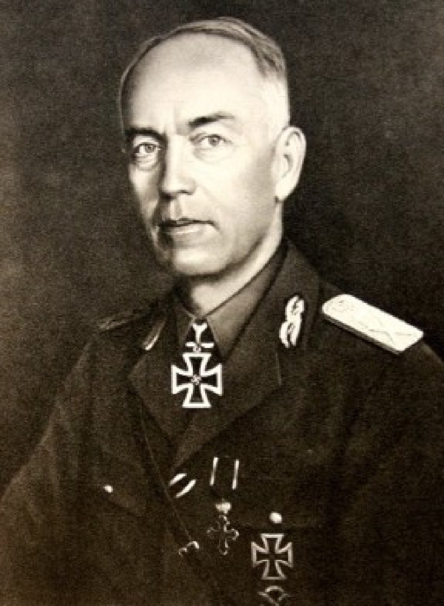
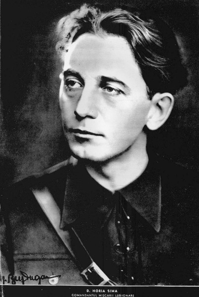
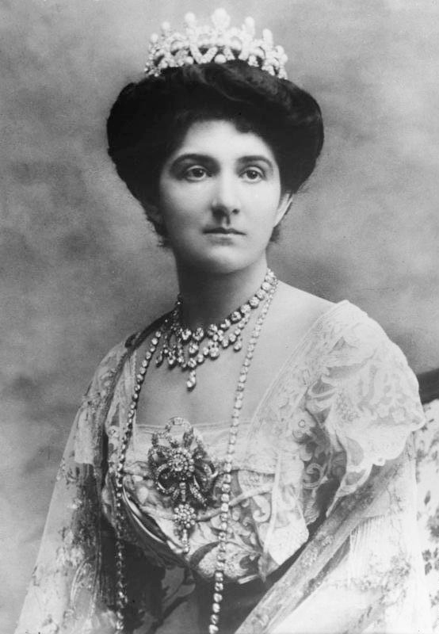

Generalul Ion Antonescu (1882–1946)

Ion Antonescu a fost liderul autoritar al României între 1940 și 1944. Sub conducerea sa, România s-a alăturat Axei în 1941, participând activ la războiul împotriva Uniunii Sovietice. Considerat un strateg militar remarcabil, dar controversat, Antonescu a adoptat măsuri dure atât pe front, cât și pe plan intern.
Contribuții principale:
- Coordonarea recuceririi Basarabiei și Bucovinei de Nord în timpul Operațiunii Barbarossa.
- Alianța cu Germania nazistă pentru a recupera teritoriile pierdute în 1940.
- Rolul său în organizarea economiei de război pentru a sprijini eforturile militare.
Controverse:
Ion Antonescu este responsabil pentru politicile antisemite ale regimului său, inclusiv deportarea și exterminarea evreilor din Basarabia și Bucovina, dar și a romilor. Istoricii estimează că zeci de mii de persoane au murit în Transnistria din cauza acestor acțiuni.
Regele Mihai I (1921–2017)

Regele Mihai I a fost monarhul României în momente critice ale războiului. Deși inițial sub influența lui Ion Antonescu, Mihai I a jucat un rol esențial în schimbarea cursului războiului prin lovitura de stat de la 23 august 1944.
Contribuții principale:
- Abdicarea forțată a Regelui Carol al II-lea în 1940, preluând tronul într-un context politic dificil.
- Lovitura de stat din 23 august 1944, prin care România a ieșit din alianța cu Axa și a trecut de partea Aliaților.
- Negocierile cu Aliații pentru a evita distrugerea completă a țării.
Impact:
Decizia Regelui Mihai de a schimba tabăra a redus durata ocupației germane, salvând numeroase vieți. Totuși, această alegere nu a împiedicat ocupația sovietică ulterioară.
Horia Sima (1906–1993)

Horia Sima a fost liderul Mișcării Legionare în perioada în care Garda de Fier a devenit o forță politică majoră în România. Deși scurtă, alianța sa cu Ion Antonescu a avut un impact semnificativ asupra politicii interne.
Contribuții principale:
- Promovarea ideologiei naționaliste extreme și a politicilor antisemite.
- Implicarea în Rebeliunea legionară din 1941, un eveniment care a dus la eliminarea Gărzii de Fier din sfera politică.
Controverse:
Regimul său a fost marcat de violență, inclusiv Pogromul de la București din ianuarie 1941. Rebeliunea sa împotriva lui Ion Antonescu a dus la înfrângerea finală a Mișcării Legionare.
Regina-mamă Elena (1896–1982)

Regina Elena, mama Regelui Mihai, a jucat un rol discret, dar semnificativ în timpul războiului. Cunoscuta pentru eforturile sale umanitare, a fost distinsă postum cu titlul de „Drept între Popoare” de către Yad Vashem pentru salvarea evreilor români.
Contribuții principale:
- Intervenția sa pentru a proteja evrei din România, convingând autoritățile să renunțe la anumite măsuri represive.
- Sustinerea fiului său, Regele Mihai, în deciziile critice din 1944.
Impact:
Acțiunile ei au salvat vieți și i-au consolidat reputația internațională ca o figură de compasiune și curaj.